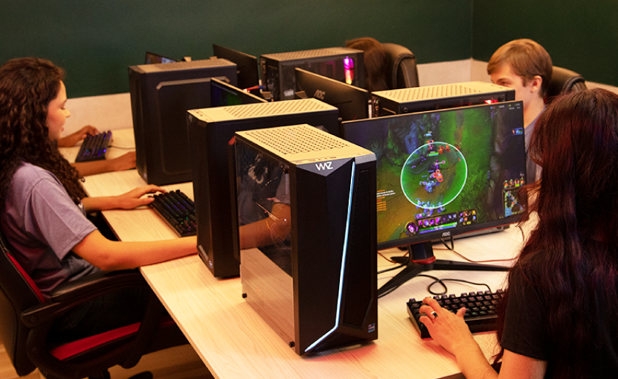
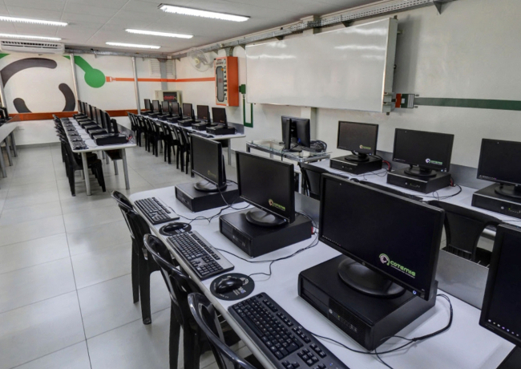
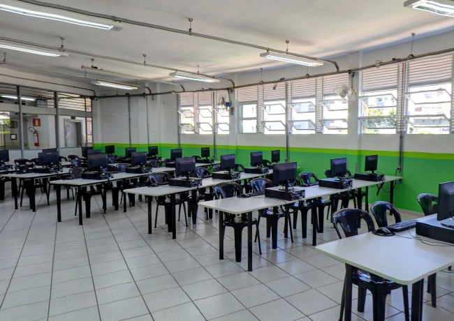

Durante as aulas do colégio
- Confira se os alunos estão sentados de acordo com o mapeamento
estabelecido pelo professor (normalmente ordem de chamada);
- Auxilie os professores durante as aulas;
- Auxilie os alunos, mas não faça os trabalhos para eles;
- Zele pelos equipamentos.
Em todos os horários disponíveis para os alunos do ensino médio você deverá
permanecer no laboratório independente da presença dos alunos.
Monitoria / Estudos (presencial)
- Nestes horários, também previstos nas planilhas dos laboratórios, somente os softwares instalados nos laboratórios poderão ser usados. A Internet não fica liberada.
- Você deverá permanecer no laboratório 2 à disposição dos alunos do colégio para tirar dúvidas (ou explicar) conteúdos de uma disciplina específica, orientando e
ajudando os alunos quando solicitado.
- Cuide para que não sejam feitos acessos indevidos (ver orientações dos manuais do aluno).
- Estes horários poderão ser utilizados pelos alunos do colégio e da faculdade.
- Passe no atendimento do colégio antes de ir para o laboratório para saber
se existe uma lista de alunos indicados para o plantão ou alguma atividade preparada pelo professor da disciplina.


Monitoria / Estudos (remoto)
- Nestes horários, acesse o link do meet disponível na planilha de monitorias remotas sempre com antecedência de 5 minutos do horário programado.
- Durante o meet, mantenha sempre sua câmera e seu áudio habilitados e ativos.